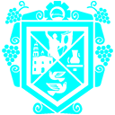

<div [ngClass]="fuseConfig.layout.navbar.secondaryBackground" class="navbar-header">

    <div class="logo">
        
        <span class="logo-text">SISTEMA COMERCIAL</span>
    </div>

    <button (click)="toggleSidebarFolded()" class="toggle-sidebar-folded"
            fxHide.lt-lg mat-icon-button>
        <mat-icon>menu</mat-icon>
    </button>

    <button (click)="toggleSidebarOpened()" class="toggle-sidebar-opened"
            fxHide.gt-md mat-icon-button>
        <mat-icon>arrow_back</mat-icon>
    </button>

</div>

<div [fusePerfectScrollbarOptions]="{suppressScrollX: true}" [ngClass]="fuseConfig.layout.navbar.primaryBackground"
     class="navbar-content"
     fusePerfectScrollbar>
    <fuse-navigation layout="vertical"></fuse-navigation>
</div>
